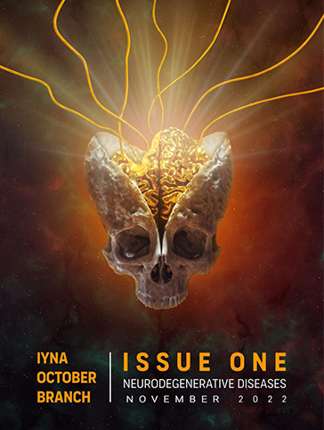

Dear readers,
Last season, we accepted many members to our research committee. We welcomed them thoroughly into our team and started preparing them for their future responsibilities of writing research papers for our Journal. However, the last season couldn't achieve the mission, which is publishing those papers.
The season of 2021-2022 with the new board began achieving those goals. Working on their English skills, especially writing, was the first step on the road. After all, a journey of a thousand miles begins with a single step. After improving their English skills, we sought to learn the ways of research from an expert, which is why the members joined the course "Writing in the Sciences.". Each member was writing about different topics related to neuroscience, and while doing that, their work was being revised to catch the mistakes and perfect the writing skills of our members.
The organization’s mission is to create an environment for scientists by allowing them to publish their articles in our Journal. Thus, we proudly announce that we are the first neuroscience journal in Egypt that fosters youth scientists to translate their thoughts into words by publishing their articles.
We are thrilled to announce the publication of the season's first issue. The articles display the eagerness of the youth neuroscientists to conduct their own articles, adding their ideas and perspectives. We thank the committee head and his vices for their spectacular work as seniors who sacrificed their time to supervise this long project and the amazing contributors who had only the benefit of the team in their minds. Finally, we must credit the youth Science Journal's research committee for their efforts and the live sessions about conducting a research article.
Best Regards,
IYNA October Chapter
Table of Contents
Issue 1
Issue 1
November 2022

Letter From IYNA October Chapter
The Cerebrum: The Ultimate crown of creation and evolution (Todo!!! -> Figure Numbering)
Abstract The cerebrum, also known as the telencephalon or endbrain, is the largest part of the brain, containing the cerebral cortex (two hemispheres of the brain) as well as several subcortical structures such as the hippocampus, basal ganglia, and olfactory bulb. it is the uppermost region of the central nervous system in the human brain. The cerebrum develops from the forebrain during pregnancy (prosencephalon). The cerebrum is also divided into left and right cerebral hemispheres that are roughly symmetric. The cerebrum, with the help of the cerebellum, is in charge of all voluntary actions in the human body.
I. Introduction

II. Overview of the cerebrum
i. Cerebral cortex
ii. The four brain lobes
Each hemisphere of the mammalian cerebral cortex has four functionally and spatially distinct lobes: frontal, parietal, temporal, and occipital (as shown in Fig.3).
The frontal lobe, located at the front of the brain, over the eyes, contains the olfactory bulb. The frontal lobe also houses the motor cortex, which is responsible for movement planning and execution.
Processing somatosensorial (touch sensations such as pressure, pain, heat, and cold) and proprioception are two of the main functions of the parietal lobe (the sense of how parts of the body are oriented in space).
The temporal lobe is near the base of the brain, near the ears. Its primary function is to process and interpret sounds. It also houses the hippocampus, which is in charge of memory formation. The occipital lobe is in the back of the brain. It is mostly concerned with the vision: seeing, recognizing, and identifying the visual world.
iii. Cerebrum function
The cerebrum directs the body's conscious or volitional motor functions. These functions originate in the primary motor cortex and other motor areas of the frontal lobe where actions are planned. Upper motor neurons in the primary motor cortex extend axons to the brainstem and spinal cord, where they make synapses on lower motor neurons that innervate the muscles. Certain types of motor neuron disease can result from damage to motor areas in the cortex. Rather than total paralysis, this type of injury results in a loss of muscular power and precision. The olfactory sensory system is distinctive in that neurons in the olfactory bulb elongate their axons directly to the olfactory cortex rather than to the thalamus. The sense of smell is lost when the olfactory bulb is damaged. Top-down information is also received by the olfactory bulb from brain areas such as the amygdala, neocortex, hippocampus, locus coeruleus, and substantia nigra. Its potential functions can be classified into four non-exclusive categories: discriminating between odors, detection of odors with high sensitivity, filtration of background odors out, and permission of higher brain areas, which are involved in arousal and attention, to modify odor detection or discrimination. Parts of the cerebral cortex are primarily responsible for speech and language. Broca's area in the frontal lobe is responsible for motor aspects of language. Wernicke's area, located at the temporal-parietal lobe junction, is considered to be responsible for speech comprehension. Damage to the Broca's area causes expressive aphasia (non-fluent aphasia), whereas damage to the Wernicke area causes receptive aphasia.III. Cerebral lobes
Brain lobes (as shown in Fig.3) were once thought to be purely anatomical classifications, but we now know that they are also linked to specific brain functions. The largest portion of the human brain, the telencephalon (cerebrum), is divided into lobes like the cerebellum. If not otherwise specified, the term "brain lobes" refers to the telencephalon. The telencephalon has four uncontested lobes.i. The frontal lobe
The frontal lobe is a region of the mammalian brain that is located in the front of each cerebral hemisphere, anterior to (in front of) the parietal lobe, and superior and anterior to the temporal lobes. It is separated from the parietal lobe by the central sulcus, which is a space between tissues, and from the temporal lobe by the lateral (Sylvian) sulcus, which is a deep fold. The primary motor cortex, which controls voluntary movements of specific body parts, is located in the precentral gyrus, which forms the posterior border of the frontal lobe. The frontal lobe houses the majority of the cerebral cortex's dopamine-sensitive neurons. Dopamine is linked to reward, attention, short-term memory tasks, planning, and motivation. Dopamine tends to limit and select the sensory information sent to the forebrain by the thalamus. According to a National Institute of Mental Health report, a gene variant that reduces dopamine activity in the prefrontal cortex is associated with poorer performance in that region during memory tasks; this gene variant is also associated with a slightly increased risk of schizophrenia. The frontal lobe contributes to our most human characteristics. Damage to the frontal lobe can cause personality changes and difficulty planning. The frontal lobes are the most distinguishing feature of the human brain.ii. The parietal lobe
The parietal lobe is located above (superior to) the occipital lobe and behind (posterior to) the frontal lobe. The parietal lobe integrates sensory data from various modalities particularly spatial sense and navigation. It includes, for example, the somatosensory cortex and the dorsal stream of the visual system. This allows parietal cortex regions to map visually perceived objects into body coordinate positions. Several areas of the parietal lobe play a role in language processing as well. This lobe also integrates information from various senses and aids in object manipulation. Visuospatial processing is carried out in parts of the parietal lobe.iii. The occipital lobe
The two occipital lobes in the human cerebral cortex are the smallest of the four paired lobes. The occipital lobes are part of the forebrain and are located in the back of the skull. There are several lateral occipital gyri at the front edge of the occipital separated by lateral occipital sulci. The occipital lobe is involved in vision; lesions in this area can cause hallucinations.iv. The temporal lobe
The temporal lobe is a cerebral cortex region located beneath the lateral fissure on both cerebral hemispheres of the mammalian brain. The temporal lobes are involved in many functions including visual memory retention, sensory input processing, language comprehension, storing new memories, feeling, expressing emotion, and meaning derivation. The hippocampus is located in the temporal lobe and is important in the formation of explicit long-term memory, which is modulated by the amygdala. It is involved in the processing of complex stimuli as well as the senses of smell and sound.IV. The white matter of the cerebrum
White matter axons carry nerve impulses between neurons and transmit signals from various grey matter areas (the locations of nerve cell bodies) of the cerebrum to one another. While grey matter is associated with processing and cognition, white matter modulates action potential distribution, acting as a relay and coordinating communication between different brain regions.
V. Conclusion
The cerebrum is the brain's largest structure. It oversees memory, speech, senses, and emotional reactions. It is divided into four lobes: the frontal, temporal, parietal, and occipital. Each is in charge of a specific aspect of the cerebrum's functions. The cerebrum is composed of white matter, which is the tissue that allows messages to travel between different areas of grey matter in the central nervous system.VI. References
Addiction and recovery
Abstract
The words “addiction” and “habit” seem to be similar, but they are completely different; addiction is considered an illness that affects the individual’s whole life and his surroundings. Whether the person got addicted to good or bad behaviors, it is still the same condition. Addiction has different types. It is treatable and has special treatment centers and hospitals. Drug abuse and addiction to alcohol have become real threats to society. Addiction has no age; many teens and adults have been involved in the addiction of alcohol and drug abuse
I. Introduction
II. Mechanism of addiction
III. Types of addiction
Addiction can be classified into two types chemical and behavioral addiction. Chemical addiction involves the use of a substance while behavioral addiction involves compulsive behaviors, which are repeated without any real benefitsi. Chemical addiction
The recent edition of the Diagnostic and Statistical Manual of Mental Disorders recommends using the term “substance use disorder” instead of “chemical addiction” that includes more diagnostic criteria to help healthcare professionals differentiate between mild, moderate, and severe cases. The common addiction substances are alcohol, heroin, nicotine, cocaine, and cannabis. Multiple variables contribute to substance addiction and dependency, including genetic predisposition, environmental stresses, social pressures, individual personality traits, and psychiatric issues. However, in all circumstances, it is impossible to tell which of these elements has the most impact on a single person. Substance use disorder is associated with some symptoms, which are the inability to think clearly, the cravings to need more of the substance; the usage of it during work, troubles managing the responsibilities, and the inability to stop the substanceii. Behavioral addiction

IV. Addiction treatment
Addiction is a complex but treatable disease that affects brain function and behavior. It is so hard to be treated, so they take a long time to get treatments. People with addiction should be aware that it is a problem and needs to be treated; this is the first step to recovery. Several treatments are available depending on some factors and the patient’s needs. Recovery methods include detoxification, counseling therapies, rehabilitation, self-help groups, and medicationsV. Rat park experiment
VI. Conclusion
Addiction is a complex illness that affects the brain and behaviors; fortunately, it is treatable. Different types require specific treatments. Mental health and social communications are essential factors to treat addiction. People of addiction need strong support from family and friends. It became more dangerous when the person does not know he got addicted. It is a big problem that faces society and needs early action.VII. References
Parkinson’s Disease & Other Movement Disorders
Abstract Parkinson’s has a long history. It is a very common neurodegenerative disease. It has been a great challenge to face and cope with and it may continue to be for the next couple of years. In this paper, we discuss the properties of the disease and how it is connected to other movement disorders. Although Parkinson’s disease is hard to identify because it has many similar symptoms to other neurodegenerative diseases, some symptoms were found which are specific for Parkinson’s disease.
I. Introduction
Parkinson’s is a neurodegenerative disease that affects the motor control of our bodies and may has other noncognitive effects. It was first diagnosed in 1817 by James Parkinson. The disease has many subtypes and shares symptoms with other diseases. It can cause cognitive and noncognitive symptoms. It also can result in the development of dementia. Unfortunately, the direct cause behind its pathogenesis is still unknown but there are some present theories that try to connect the dots. The treatments of the disease are all symptomatic, and there aren’t any disease modifying drugs. However, there are promising medications on the way. To understand how the treatments affect the disease, we have to look into its root causes.
II. Causes
There is no doubt that a correlation between loss of dopamine neurons and Parkinson’s disease exists. To understand this correlation, let’s look at the cause of neuronal loss of dopamine neurons.
Dopamine neurons in the substantia nigra are lost as we age. About one third of them are lost between the age of 20 and 90 years. The cause behind this is considered to be due to the oxidative stress (reactive oxygen species irregular manifestation). The enzymatic oxidation of dopamine generates hycytotoxic hydroxyl radicals in the presence of iron (Ⅱ) which is rich in the substantia nigra. On the other hand, non-enzymatic oxidation of dopamine yields superoxide, which produces a quinone that binds to a thiol group and denatures active protein. This evidence connects
oxidative stress to the deterioration of dopamine
NM(R)Sal is considered to occur in the nigra-striatum due to high activity of N-methyltransferase in this brain region. After its synthesis, NM(R)Sal is oxidized into (DMDHIQ+) by enzymatic or non-enzymatic oxidation that generates hydroxyl radicals. Also, the in vitro and in vivo experiments suggest that the accumulation of (DMDHIQ+) in the substantia nigra is due to the binding of (DMDHIQ+) to neuromelanin (found in large quantities in the substantia nigra). Data suggest that NM(R)Sal synthesized in the striatum is transported by retrograde axonal flow to the
substantia nigra and oxidized there or on the way to produce the DMDHIQ+
III. Motor symptoms
Parkinson’s disease since its discovery was associated with motor symptoms. Afterall, that is how Dr. James Parkinson identified it as shaking then palsy. Parkinson’s disease includes the three most agreed upon symptoms: tremor, rigidity, and bradykinesia (slowness of movement). The onset of Parkinson’s disease may start as early as 12 to 14 years before diagnosis of the disease. Recent data support the fact that Parkinson’s disease start in the peripheral autonomic nervous system and/or olfactory bulb. Then, it spreads through the nervous system, affecting the lower
brain stem before reaching the substantia nigra. Clinical diagnosis of Parkinson’s disease depends on the presence of bradykinesia combined with rigidity or a resting tumor. Early symptoms generally show up asymmetrically, with the absence of atypical symptoms (cerebellar signs, early severe autonomic dysfunction, vertical supranuclear palsies, or cortical sensory loss), which would be indicative of an alternative diagnosis (9). In these cases, the asymmetric onset of symptoms and a good response to levodopa support Parkinson’s diagnosis in patients. Also, they are
important features to discriminate Parkinson’s disease from other form of Parkinsonism
IV. Non-motor symptoms
i. Neuropsychiatric dysfunction
Depression Depression is a common symptom of Parkinson’s. The prevalence of major depression in patients of Parkinson’s disease ranges from 4% to 70% with a mean of 40%. Recent research suggests that most of Parkinson’s patients show symptoms of minor depression. As patient with Parkinson’s show less self-blame, guilt, sense of failure, self-destructive thoughts, and probability of committing suicide. However, anxiety, panic attacks, and anhedonia are more frequent in Parkinson’s patients. Also, depression symptoms “panic attacks” have been found to precede motor defects in about 30% of Parkinson’s patientsii. Sleep disorders
Sleep disorders are common in different types of dementia and they include difficulties falling asleep, frequent awakenings, nighttime cramping, painful dystonia, or nighttime motor symptoms with difficulties turning in bed, motor restlessness or clear-cut restless legs syndrome, night-time incontinence, nocturnal confusion, hallucinosis and daytime sleepiness. Parkinson’s disease neurodegeneration affects the sleep structure resulting in sleep fragmentation, sleep efficiency reduction, slow wave sleep declination, decreased rapid eye movement while sleeping, and rapid eye movement behavior disorderiii. Autonomic dysfunction
Orthostatic hypotension Orthostatic hypotension is a late feature of Parkinson’s. A study that included 135 patients found Orthostatic hypotension in 30% of them. Another study that included 91 patients with tilt table examinations found systolic blood pressure drops of more than 20 mmHg in 58% of patients. It is worth noting that symptomatic orthostatic hypotension correlated with the dose of dopaminergic medication and the duration and severity of Parkinson’s disease. Orthostatic hypotension in patients with Parkinson’s disease is caused by Cardiac sympathetic denervationiv. Sensory symptoms and pain
Abnormal pain sensations that aren’t the result of common causes of pain in the elderly have been reported in 40% to 50% of patients with Parkinson’s disease. A study suggest that the pain sensations are caused by changes to the central pain-processing pathways. Other sensory symptoms include problems with odor detection and discrimination. It affects 90% of patients with Parkinson’s disease and it suggests a neuropathology affecting the olfactory bulbs. Furthermore, Hyposmia is found when patients are tested for it but they patients don’t spontaneously complain of it. Hyposmia doesn’t appear to progress with the Parkinson’s disease but presents itself at the start of the disease. Recent data suggest that hyposmia may be a risk factor of Parkinson’s diseaseV. Treatments
The only available treatments for Parkinson’s disease are symptomatic. Because the disease isn’t fully understood, no disease modifying treatments currently exist. As Parkinson’s disease is a long-term disease, patients may need to take sophisticated medications with a likelihood of side effects. The type of medication taken by Parkinson’s disease is dopaminergic to replace the action of dopamine in the striatum are the main treatment for Parkinson’s disease. These dopaminergic drugs work by metabolizing to dopamine, activating the dopamine receptor, or preventing the breakdown of endogenous dopamine. The medication courses are customized for every individual based on the severity of the symptoms and the side effects that affects them. Before we discuss the treatments, we need to know how dopamine is synthesized in the brain.i. Dopamine biosynthesis and metabolism
ii. Current treatments
Levodopa Levodopa based treatments are designed to replace the dopamine in the depleted striatum as dopamine can’t cross the blood brain barrier unlike its precursor levodopa. After absorption and transit across the blood brain barrier, it is converted into dopamine by DOPA decarboxylase. Most patients must take a dose of 150 to 1000 mg daily, divided into multiple doses. As it is usual practice for Parkinson’s disease patients to take a low dose of levodopa, while increasing the dose based on the patient’s response to the treatment to balance it against the experienced adverse effects. These effects of the drug are noticed quickly and may last for several hours. However, as the disease progresses in patients, the effect of the drug starts to wear off after shorter durations and there is a need to increase the frequency of taking doses. Moreover, prolonged use can result in significant motor complications, including dyskinesias, and severe on-off motor fluctuations. Another side effect of Levodopa is the on-off phenomenon, in which patients with advanced Parkinson’s disease experience rapid fluctuations in their motor function. During the on-state, motor symptoms are controlled relatively well, but the rapid wearing of the levodopa leaves the patient in the off state, where they have severe motor Parkinsonian symptoms. The causes of these symptoms are probably the variable drug absorption and transit across the blood brain barrier, and the resulting fluctuations in pre-synaptic and post-synaptic dopamine levels in the nigrostriatal pathway. Other important symptoms include gastrointestinal disturbances such as nausea, vomiting, and orthostatic hypotension. Neuropsychiatric features include anxiety and hallucinations may occur due to the dopamine acting in extranigral brain regions (an off-target)iii. Future treatments
There are currently no disease modifying treatments for Parkinson’s disease. However, a number of promising approaches and new medications are being developed. Also, there is a lot of interest in drug repurposing, which is using approved or experimental drugs to treat a disease outside of their original medical engineering. Because repurposed drugs have been tested previously, safety data already exist, so going through clinical trials is faster. Other approaches are in or about to enter clinical trials. These include gene therapies, such as ProSavin—a virus vector carrying the genes for DOPA decarboxylase, TH, and guanosine triphosphate cyclohydrolase-1 (It can cause a disease associated with Parkinson’s disease) and stem cell approaches. These aren’t disease modifying treatments but they restore dopaminergic activity in the striatum in a better manner than other available medications, with a theoretic reduced adverse effect of levodopaVI. Conclusion
In conclusion, Parkinson’s disease has existed for a long time and has affected many people rendering them paralyzed or unable to carry on with their daily activities. Because of its many symptoms, it is very hard to deal with it without taking into account many side effects. Parkinson’s has destroyed the lives of many over the years, but now we can do more than just slow the development of the disease.VII. References
JAK/STAT pathway inhibitors to treat neuroinflammation: A novel treatment for Parkinson Disease patients (Todo!!! -> figure 3 & 4)
Abstract Parkinson’s Disease (PD) is a common neurodegenerative disorder, causing tremor, rigidity, and bradykinesia. The neuroinflammatory phenotype of Parkinson’s disease leads to overexpression of pro-inflammatory cytokines IL-6 and IFN-γ due to neuroinflammation phenotype in PD patients. Pre-clinical rat models have shown that the Janus Kinase and Signal Transducer and Activator of Transcription pathway (JAK/STAT) are over-activated, especially IL-6, IFN-γ, and MHC Class II. In this study, it is proposed to perform a trial on 1-methyl-4-phenyl- 1,2,3,6-tetrahydropyridine (MPTP)-treated mice to test Ruxolitinib, a JAK/STAT pathway inhibitor, as a novel medication for PD patients. There will be 3 groups to test the hypothesis: The first group will be given Ruxolitinib orally at 5 mg/kg, the second group will be given the same medication at 10 mg/kg, and the third group will be vehicle-treated (control group). After 4 weeks, the treated mice will undergo immunoblotting and electrophoresis to check if MHC Class II is expressed appropriately in the control groups and compare it and the results of administering Ruxolitinib. It is expected that there will be a noticed decrease of activation of the MHC Class II in the mice after the 4 weeks. This proposal if applied could show the potential of the JAK/STAT pathway as a therapeutic target to help slow down the progression of PD.
I. Introduction
II. Research Aims
III. Research Hypothesis
Levels of MHC Class II will decline by inhibiting the JAK/STAT pathway using Ruxolitinib, indicating that Parkinson’s disease progression is slowed down.
IV. Methodology
The hypothesis postulated in this proposal will be tested in mice. These mice will be chemically induced with 1-methyl-4-phenyl-1,2,3,6- tetrahydropyridine (MPTP) to simulate Parkinson’s Disease. The complete protocol that Jackson-Lewis proposed will be followed to ensure the induction of Parkinson’s disease in mice modelsCorrespondingly, the JAK/STAT pathway inhibition will be measured by probing STAT1 and STAT3 using anti-STAT1 and anti-STAT3.
Afterwards, the separated sample will be electro transferred onto a polyvinylidene fluoride (PDVF) membrane by creating a transfer sandwich. The transfer sandwich will be composed of a sponge, 3 filter papers, gel, PVDF membrane, 3 more filter papers in a sandwich structure as shown in figure 4. By placing electrodes on top of the sandwich and applying current, the cell sample on the gel will transfer onto the membrane because it will travel from the cathode to the anode. Lastly, the expression of the MHC Class II will be observed through observing the results in a dark room as the antibodies would be prepared with chemiluminescence.
V. Discussion
VI. Expected Results
According to evidence from past research papers of PD models, by inscribing JAK/STAT pathway inhibitors, Ruxolitinib, to MPTP mice models, there should be a noticed change of activation of the MHC Class II, which correlates with alpha-synuclein in the animals over the following 4 weeks. In the immunoblotting results, the MHC Class II protein should be expressed after MPTP treatment but will be strongly inhibited by the Ruxolitinib treatment.VII. Conclusion
Knowing that the JAK/STAT pathways play an essential role in Parkinson’s disease as many studies showed, the therapeutic potential of tackling the pathway is explored. This has been proposed to be done using JAK 1/2 inhibitors called Ruxolitinib. These novel medications in doses of 5 mg will be administered daily to MPTP-treated mice models of Parkinson’s Disease for 2 weeks. Using immunoblotting, the ventral midbrain will be examined to compare between them as control groups would have abnormal levels of STAT1 and STAT3 protein expression while mice treated with inhibitors will have less. Upon successful completion of this trial, PD therapeutics will be revolutionized. As of future plans, the project shall escalate if successful to be tested on MPTP-induced primates. This will allow us to better test tolerance in primates and observe the drug’s efficacy on Parkinsonism in primates. Depending on the results of this trial, the next step will be determined. If successful for PD patients, the drug shall be passed onto for Phase I trials where it will test the drug and dosage on 20 to 100 healthy volunteers. The purpose of this phase will be mainly to make sure we have the safe dosage range. The second phase of clinical trials involves recruiting a small sample of PD patients with various disease severities to determine major and minor side effects and efficacy in PD populations. The main purpose of this phase will be to measure its efficacy in slowing down the progression of Parkinson’s disease and side-effects. This step could take more than 2 years. If these patients show positive results that support the hypothesis, we will look forward into further trials with increasing number of PD patients to measure its safety and efficacy.Acknowledgements (Todo!!!!!!!!)
VIII. References
Alzheimer (symptoms, treatment)
Abstract Alzheimer’s disease is a common disease among the elders and has existed for many years. It is the the neurodegenerative disease that has the highest probability of causing dementia. It has affected many people and left them in a miserable state. Over the years, we discovered a lot about it and how it affects our bodies. In this paper, I present a summary of the symptoms of Alzheimer’s disease and its current and future treatments.
I. Introduction
Alzheimer’s disease is the most common form of dementia (about 60% of all dementia cases are Alzheimer’s disease). Dementia is the loss of cognitive functioning — thinking, remembering, and reasoning — to such an extent that it interferes with a person's daily life and activities. The difference between dementia and Alzheimer’s is that dementia is an umbrella for multiple symptoms while alzheimer’s is progressive disease of the brain that slowly causes impairment in memory and cognitive function. Furthermore, it affects about 1% of 60-year-olds, and the prevalence increases to 35% between 90-year-oldsII. Symptoms
The symptoms of Alzheimer’s disease have different aspects: neurological, neuropsychiatric, and behavioral aspects.i. Neurologic symptoms
Alzheimer’s disease is determined by the existence of plaques and tau tangles (also know as Neurofibrillary tangles) in the brain. However, that is not the only neurological characteristic of it. Other effects characterized by the (NINDS) include myoclonus, unintentional reflexes (like grasp reflex), seizures, and muscle ton increment like the Parkinsonian cogwheel rigidityii. Neuropsychiatric symptoms (NPS) and how they affect the development of dementia
Patients with dementia develop neuropsychiatric symptoms (psychiatric symptoms of cognitive defects), and Alzheimer’s disease is no exception to this rule. There is a debate in the scientific community on whether the elderly with neuropsychiatric symptoms have a higher risk of developing mild cognitive impairment, and whether treating these symptoms can delay or prevent the progression to mild cognitive impairment and dementia. There is a correlation between Alzheimer’s disease and different types of neuropsychiatric symptoms like delusions, hallucinations, paranoia, agitation, anxiety, depression, and aggressionIII. Treatments
The methods of treatment of Alzheimer’s disease are not that varied and only depend on one scientific basis which is using cholinesterase inhibitors. However, new treatments that focus on delaying or preventing the disease completely are being tested clinically and with time we may come across a breakthrough.i. Available treatments
It was noted by the scientific community that cholinergic systems (neurons in which acetylcholine functions as neurotransmitters) in the basal forebrain are the first to get affected. The three current treatments for Alzheimer’s disease, approved by the (FDA), are donepezil, rivastigmine, galantamine, and memantine. They are cholinesterase inhibitors that delay the degradation of cholinergic systems. A study of the efficacy of rivastigmine reported that patients who started the drug earlier than others achieved better cognitive performance. However, these only demonstrate modest to consistent benefit for cognitive ability. They don’t prevent the disease or slow its progressionii. Behavioral and psychological treatments
Serotonin reuptake inhibitors like fluoxetine, sertraline, paroxetine, citalopram, and fluvoxamine are considered the best antidepressants for comorbid depression. Selective noradrenaline and serotonin inhibitors like mirtazapine, venlafaxine, and duloxetine are all commonly used antidepressants. A study concluded that using antidepressants with usual care may cause destructive effects and that their use must be reconsiderediii. Disease-modifying treatments
Disease-modifying treatments focus on preventing or treating the disease by diminishing the underlying causes of the disease like vaccinations. Some treatments like tramiprosate, colostrinin, and scyllo-inositold focus on interfering with amyloid β clustering but they haven’t shown any promising results. Chelators of Zn/Cu were used to make treatments like PBT2. It stops the Cu2+ and the Zn2+ mediated toxic oligomerization (the process of turning β amyloid into oligomers). Patients showed cognitive improvements using PBT2 especially if 250 mg is administered. Other modifying treatments focused on inhibiting secretase but to no avail. However, there is a promising secretase inhibitor called avagacestat that is still going through trials. Another method is secretase potentiation (unlike secretase, it doesn’t cause toxic side effects). Etazolate is an example of this method of treatment. It was found to be generally safeIV. Conclusion
Alzheimer’s disease is a form of dementia that affects old people. Although it was diagnosed a long time ago, it is still a hard disease to deal with. After a long time of researching the disease, symptoms and treatments alike were discovered. Finally, some breakthroughs were made and there is a chance that soon, Alzheimer’s will just be a relic of the past.V. References
Genetics of Alzheimer’s disease: How the beta-amyloid hypothesis (Aβ) cannot be the best framework for understanding, addressing, and treating Alzheimer's disease.
Abstract Alzheimer’s disease (AD) is a progressive chronic neurodegenerative disease caused mainly by a genetic mutation in the brain. The beta-amyloid hypothesis is a leading hypothesis that has been widely-accepted throughout the years .It indicates that clumps of beta-amyloid particles, which are cleaved from the protein APP on the neuronal membrane by an external enzyme known as beta-secretase, are the primary cause of AD. Despite the accuracy and extensive research on this particular theory, clinical trials and drug tests that specifically target (Aβ) almost never succeed in producing a medication that treats the disease from the core rather than just its symptoms like other medications on the market at the time, like memantine. The debate over the reliability of the beta-amyloid theory and the disappointing results of therapeutic trials for AD will be covered in this paper. Moreover, other researchers have chosen a different path in their quest to learn more about possible explanations for AD. This paper will also go over some of the research done to demonstrate the pathological relationship and even the role of Aβ disposition in the brain.
I. Introduction
II. The beta-amyloid hypothesis and its interpretations
The amyloid precursor protein (APP), a type I transmembrane glycoprotein, is broken down to produce the Aβ peptide. A type of extracellular protease known as the α-secretase typically cleaves the APP near to the membrane. This releases a soluble extracellular fragment. These cleaved parts are soluble therefore, they can be recycled and used again.These plaques cause substantial disruption to memory formation by blocking the synaptic cleft, a tiny space where neurons communicate electrically and chemically. This space is where these plaques cause damage to neurons. Additionally, these plaques trigger an immunological response with the help of microglia, which are immune cells in the brain. This may result in inflammation and further harm the neurons.
These observations imply that cognitive abnormalities seen in other Tg APP animals may also occur prior to A plaque formation like when these mice are assessed at various intervals.
III. Clinical trials that had failed the beta-amyloid hypothesis
i. vaccination:
ii. Solanezumab (synthetics antibody):
iii. BACE inhibitors:
IV. The pathological hypothesis as another suggested theory
Other researchers have dug up to see if there was another approach to explore the AD brain since the results of these clinical trials points to the possibility that the amyloid theory may be incorrect. They followed a completely different road, which was pathology.They used mathematical models by collecting information from brain banks, collection of brain tissue samples from people who donated their brains after they die for research purposes.V. Conclusion
In conclusion, it is perfectly feasible that AD is brought on or progresses in many ways; consequently, the virus may be implicated in some cases but not others, and a person's immune system may also be engaged. Additionally, measuring AD from a single angle is ineffective for identifying its causes or finding a suitable medication to treat it. There are several reasons why these trials fail, some of which include: selection of the wrong patient population, Variability in clinical progression rate,Inadequate dosage or exposure to drugs, The wrong time to intervene and The clinical scales' lack of sensitivity.VI. References
Stem Cell Therapies and Neurodegeneration Diseases
Abstract Alzheimer's and Parkinson’s disease are disorders characterized by the progressive degeneration of neurons. These diseases are called neurodegeneration diseases. Neurodegenerative diseases and the lack of curative therapies are social and medical issues to deal with. As stem cell technologies are getting more advanced and interesting, scientists are taking advantage of them in the medical field. Stem cell therapy is an alternative option to cure neurodegenerative diseases. They are like immunomodulators and neuroprotectors. This paper will discuss stem cell therapies for treating such disorders as well as some of their applications.
I. Introduction
Neurodegenerative disease is a disorder in which neurons and glial cells of the brain and spinal cord are lost, and it has acute and chronic conditions. In acute cases, as in response to a stroke or spinal cord injury, different types of nerve cells and glial cells die within a limited brain area over a short period of time. In chronic cases, it is either a selective loss of specific cells, such as dopamine neurons in Parkinson's disease and motor neurons in Amyotrophic Lateral Sclerosis or the degeneration of many types of neurons, as in Alzheimer's disease, over several yearsII. Stem cells strategies
Stem cell therapies are known as regenerative medicine; scientists have come up with some techniques to use stem cells to treat serious diseases by using their differentiation ability. Researchers prepare stem cells in labs, then manipulate them to specialize into the needed cells, such as heart cells or nerve cells. For a heart disease patient, the specialized cells could be implanted into the heart muscle. The healthy implanted cells could restore the function of the hearti. Cell Transplantation
ii. Neuroprotection
Neuroprotection is a mechanism that refers to defending the central nervous system against any injury due to both acute and chronic neurodegenerative disorders. It slows down the loss of neurons and supports the remaining neurons, which is more practical than cellular replacement. It is preferred to Sclerosis treat Amyotrophic Lateral-explanation, which is widely involved in the neural axis and can support the remaining motor neuronsIII. Applications
i. Alzheimer's disease
ii. Parkinson’s disease
IV. Conclusion
Neurodegenerative diseases have bad impacts on the community. For decades, medical experts have studied how to decrease the burden of neurodegenerative diseases, and some strategies are being discussed according to safety and ethical concerns. Stem cell therapies still do not fulfill the medical needs for such diseases, but they give hope that there will be a cure. Currently, there are not many practical results for stem cell-based therapies and their effectiveness on neurodegenerative diseases; it may take several years to come up with the best treatment.V. References
Music Therapy: Presenting New Medical Treatments for Neurological Diseases
Abstract A time-based sound art that communicated thoughts and emotions in meaningful ways via rhythm, melody, harmony, colour, tones, or sounds used in a single line (melody) or many lines (harmony) and heard or to be sounded by one or more voices, instruments, or both are all definitions of music. Music is more than some tones; music can help treat some severe diseases and significantly impact the physical and mental state of the person, which can be called music therapy. Music therapy is an allied health profession, " the clinical and evidence-based use of music treatments to achieve customised objectives within a therapeutic relationship by a certified practitioner who has completed an accredited music therapy curriculum." Music therapy is a diverse discipline. Music therapists use music-based experiences to address client needs in one or more of the following domains of human functioning: cognitive, academic, emotional/psychological; behavioural; communication; social; physiological (sensory, motor, pain, neurological, and other physical systems), spiritual, and aesthetics. This research paper aims to cover how the human brain understands and processes sound, specifically music.
I. Introduction
The brain is a complicated structure made up of linked parts. The brain's structural and functional connections have the characteristics of complex networks and may be studied using theoretical graph methods.II. How Brains Process Sound
Music is a solid and frequent emotional experience for many individuals, yet so few of us comprehend entirely how certain sounds impact emotions. To grasp how bodies interact with sound.The main parts that are affected by music are
- Temporal lobe
- Amygdala
- Frontal lobe
- Cerebellum
- Hippocampus
They will be explained in detail in the coming sections.
i. Temporal lobe
ii. Amygdala
iii. Frontal lobe
iv. Cerebellum
v. Hippocampus
III. Music: A closer look
Music affects the feelings and mood of listeners and musicians in many ways that have been proven by research. It can be noticed when feeling special after listening to the favourite music now, or when music excites, or when deeply moved when hearing a romantic song, but in all cases, when listening to liked music, have fun regardless of its nature, which happens scientifically.i. Effect of Music on Dopamine
Dopamine is a neurotransmitter that transmits information between nerve cells. It is also an essential and dangerous hormone that helps improve mood and a feeling of inner happiness and very comfortable satisfaction within a system known as the reward system within the brain. Neurons in the brain release dopamine within several dopaminergic pathways when doing a favourite thing or beloved to us, regardless of whether it is helpful or harmful.ii. Music and attention
Most people have tried listening to music while performing specific tasks, such as studying while listening to music, believing that this helps them focus, motivates them to continue, and improves their mood, increasing their productive and absorptive capacity.The result was uneven for people; for some, it was positive for him and increased their production capacity and helped them well, while for others, the music distracted their attention and reduced their productivity in the same period compared to others.
The answer to this problem is that music does not affect people similarly. It differs from one person to another. It may be helpful for people to produce and harmful to others.
When music is helpful for a person while performing his tasks, it will reduce pressure and impressively stimulate him, improve his mood, and help him to focus, memorise and understand well. Still, to be helpful, certain types of music must be listened to because some music may be harmful to them, and the kind of music varies according to the person the listener.
As for the other type of people harmed by listening to music while working, this happens because it reduces their focus, distracts their attention, and makes memorising and understanding complex. Therefore, the matter varies from person to person, and the process is not equal for everyone. The person must try it himself, in the beginning, to determine his condition in this matter.
iii. Music and Memory
Some research says it has been found that in musicians, compared to non-musicians, there is more grey matter in the part of the frontal cortex known to accommodate neural networks involved in many crucial working memory processes.After knowing this information, can music help develop memory and help treat Alzheimer's disease?
Research strongly indicates that music significantly improves memory, as music works to reactivate some brain cells responsible for memory.
Music has played a significant role in helping Alzheimer’s disease treatment, as listening to music brings back old memories related to the patient, which allows us to treat him better.
Alive Inside movie tells how music can help restore parts of memory and improve brain health and quality of life for Alzheimer's patients.
IV. Music therapy
Music therapy is the clinical application of music to achieve customised goals such as stress reduction, mood enhancement, and self-expression. It is a well-established evidence-based treatment in the medical world. Listening, singing, playing instruments, or making music are all examples of music therapy experiences.Behavioural, biological, developmental, pedagogical, humanistic, adaptive music instruction and other paradigms may be used in music therapy.
Music therapy improves one's quality of life by incorporating interactions between a skilled music therapist and one individual and another, the individual and their family, and the music and the participants. These connections are organised and changed using musical components to create a good atmosphere and set the stage for successful growth.
Music therapy can treat things like
- ASD
- Alzheimer’s disease
- Chronic pain
- Substance abusing
Those things will be discussed in detail in the coming sections.
i. Autism spectrum disorder (ASD)
Autism spectrum disorder is a brain development illness that affects how a person sees and socialises with others, producing difficulties with social interaction and communication. The condition also exhibits restricted and repetitive behavioural patterns. The word "spectrum" refers to the various symptoms and severity associated with an autism spectrum disorder.Autism spectrum condition manifests itself in early infancy and ultimately creates social, academic, and occupational functioning difficulties. Autism symptoms often appear in youngsters during the first year of life. A tiny proportion of children seem to grow normally in the first year but subsequently have regression between 18 and 24 months when they acquire autistic symptoms.
While there is no cure for autism spectrum conditions, early intervention may significantly impact the lives of many children.
Music therapy may assist children with ASD in improving their abilities in main outcome areas such as social interaction, verbal communication, initiating behaviour, and socioemotional reciprocity. Within the treatment framework, music therapy may also assist in improving nonverbal communication abilities. Furthermore, music therapy may enhance social adaption abilities in children with ASD and promote the quality of parent-child interactions in secondary outcome domains.
Children with ASD have the same obstacles in music therapy as in other therapeutic modalities, in school settings, or at home. To date, research has provided some evidence of effectiveness. In secondary and tertiary diagnostic services, child development centres, and clinical and educational settings where music therapy is included as part of the multidisciplinary services, this intervention is most notable in promoting interpersonal communication, reciprocity, and the development of relationship-building skills.
ii. Alzheimer's disease
Because there is no treatment for the condition, others focus on measures to enhance a patient's quality of life. Music has several advantages for people living with Alzheimer’s at various stages of the illness. Music therapy has been shown in studies to enhance a patient's attention and capacity to interact with people close to them and may reduce their need for psychiatric medicines.
Music has various advantages for people with Alzheimer’s at each stage of the illness. This is particularly true in the latter stages of Alzheimer's disease, when individuals may become disconnected from their surroundings and lose their capacity to interact and connect with people verbally.
When people with Alzheimer’s hear music, they often experience a perceptible shift. They may perk up and become more interested in their environment. They may sing, dance, or clap their hands when they hear music. Responses to rhythm bypass the brain's standard response mechanism. Instead, the brain reacts directly to the music and instructs the body to respond by clapping, swaying, or humming.
Going out dancing or attending a concert may aid patients in the early stages of the condition. Respect their preferences, even music they used to like. Brain alterations may influence their musical perception. Those who used to play an instrument may find it pleasurable to do so again. Note and play precious pieces, such as wedding tunes, to evoke good recollections.
As the condition worsens, listening to music while walking may improve balance. Music may also be utilised to lift a person with Alzheimer's mood, and relaxing music can assist with nocturnal behaviour concerns. Later, while recalling old occurrences, the same favoured bits may spark a person's recollection. Music often stimulates people living with advanced Alzheimer’s to exercise. Relaxing music also relaxes and comforts.
iii. Chronic pain
Endorphins are released when listening to music, according to this article. Endorphins are chemicals that interact with pain receptors in bodies, disrupting pain signals and providing a sense of well-being. They operate similarly to opioids but without undesirable side effects. Endorphins function as the body's natural painkillers.For years, music has been used to treat acute pain (such as during cancer treatment and before, during, and after surgery) with substantial success. Many studies show that when music therapy is used after surgery, patients take fewer painkillers and have a more positive attitude.
This use of music in acute pain treatment may also be used for chronic pain. In the long run, the same analgesic effect may be obtained, reducing the need for medicines. When combined with other established pain treatment techniques and therapies, patients may have a significant reduction in pain and a notable increase in their levels of functioning.
Studies show that music stimulates parts of the brain that control and decrease pain. This indicates that listening to music may assist the brain in managing and minimise discomfort in the body. Those suffering from chronic pain often feel detached or dissociated from our bodies as a coping mechanism. This may lead to a loss of self-awareness. Patients may benefit from music therapy by being more aware of their bodies and reconnecting with themselves. This understanding may assist patients in learning how to control their symptoms better.
Distraction tactics (such as listening to music) may be helpful in everyday life. Distraction is one of the primary coping mechanisms to deal with chronic pain and bipolar condition. Distracting allows attention to more positive things rather than lingering anxieties or pessimism. Music can greatly assist, whether it's distracting from discomfort during exercise or singing a song to improve mood and re-energize when taking a break from work.
Research on the use of music as a treatment for chronic pain sufferers discovered that those who listened to music had a higher quality of life despite their discomfort. "Music may offer an emotionally engaging diversion capable of lowering both the sense of pain and the associated unpleasant affective experience," they discovered.
Many patients retreat from social events for fear of aggravating their pain or inability to keep up with loved ones. This may lead to loneliness, exacerbating chronic pain symptoms, stress, and destructive emotions. Music therapy may provide a feeling of connection and involvement, mainly when done in a group setting where patients can meet others who are going through similar challenges.
V. Substance abusing
Todo!!!! vdo not need to participate in a structured music therapy intervention program to benefit from the use of music. Music may be used discreetly to improve mood, forget about the stresses of the day, and as a distraction tool to cope with cravings and other challenges typical in recovery. Whether used as a standard form of therapy or as a private method of relaxation and treatment improvement, music is not intended to be a replacement for a professional drug use disorder treatment program. It is intended to boost the effectiveness of these initiatives.
VI. Conclusion
Many things related to the effect of music on the brain have been clarified in two ways, the first psychological and the other from an anatomical point of view of the brain. From a psychological point of view, it was concluded that music affects mood, attention, and memory. The seven strategies that improve the listener's perspective were concluded behind the impact of music on dopamine. The impact of music on memory was influential, as it is used to enhance the process of treating Alzheimer's disease. On the other hand, the research paper showed how music affects the brain in terms of the physiology of some parts of the brain affected by music. At the beginning of this part, the mechanism of the hearing process and its understanding through the brain have been explained well. The five elements of the brain that are affected by music have been clarified: the temporal lobe, amygdala, frontal lobe cerebellum, and hippocampus. The location of each part of the brain, its role in the listening process, and the effect of music on it were shown clearly. In the third and final section of the research paper, the significant role of music in treating many diseases and solving many health problems was presented. It has been shown that music therapy effectively solves many health problems, and four examples of health problems that music can contribute to their treatment have been clarified. These four diseases are autism spectrum disorder (ASD), Alzheimer's disease, chronic pain, and substance abuse. From all these words, we can deduce the role of music and sounds in our lives. In the end, every process that happens is calculated and accurate, and not a coincidence, and with careful consideration and patience, everything can be exploited for the benefit of man.VII. References
Major Depressive Disorder: the changes in the global connectivity of the frontoparietal cognitive control network
Abstract Variation in mental health among people may usually indicate the persistence of mental illnesses even if the individual lacks the diagnostic criteria for this illness. In order to clarify the factors that reveal the presence of mental illness risks, and the subclinical problems affecting life quality, it is essential to study and analyze the individual variability regarding their mental health. In fact, studying the relationship between mental health symptoms and resting-state functional connectivity patterns in cognitive control systems is the key which will reveal a better understanding of the variability of the brain’s large-scaled mechanism. The frontoparietal cognitive control network (FPN) is a control network serving to rapidly and instantiate new task states by flexibly interacting with other control and processing networks. Any change in FPN would disrupt the ability of symptoms regulation resulting in negatively mental health impacts. In fact, depression symptoms severity negatively correlated with between-network global connectivity (BGC) of the FPN. From this, it is supposed that any decrease in the connectivity between the FPN and the rest parts of the brain is related to increasing the severity of depression symptoms for the person in general.
I. Introduction
Depression, altering more than 264 million people around the world1, is a severe mental health disorder that frequently leads to suicide. In order to be diagnosed with depression, a patient should meet at least four symptoms based on criteria. Also, the symptoms should have persisted for two weeks. The criteria are irritability, anorexia, feeling empty or sad, insomnia, and weight change. Although some people might not meet the criteria, they would experience some symptoms of depression. In this review, this natural variability was used, helping in comprehending the neuroscience of poor mental health and factors that might contribute to developing a severe mental illness. One study hypothesized that symptoms of poor mental health are related to the Front-parietal network (FPN). According to another study, the FPN has a physiological role in protecting against mental health symptoms.Disturbance in the FPN function, altering the domain-general neurocognitive feedback system capable of regulating symptoms as they occur, is the primary reason for multiple mental disorders. The FPN is a flexible hub, which means it can quickly modify the functional connections regarding its goals because it has high connectivity across the brain. Individual variations in the overall capacity to control cognition can influence symptoms, according to significant evidence that the FPN functions are domain-general. Depression, schizophrenia, anxiety, attention deficit hyperactivity disorder, and eating disorders have been noticed in patients with disturbances in FPN functional connectivity (FC). In this review, we focused on FC assessed by functional magnetic resonance imaging (fMRI), estimated as the material connection in the blood oxygenation level-dependent (BOLD) signal between brain areas. At the same time, individuals relax in the scanner.
Two studies estimated a summary statistic regarding the level of conductivity of FPN around the brain. However, the relative size of different networks can impact these calculations. For instance, nodes with a smaller network will have fewer connections than the more extensive network. Thus, a study used between-network global connectivity (BGC) to determine how effectively a brain area is connected to its rest.
Patients suffering from severe depression had anomalies in FC patterns in the brain, which involved FPN functional connections. In addition, patients suffering from depression had lower conductivity between FPN areas. A similar result was seen in undiagnosed people with depressive symptoms. Furthermore, according to another research, global brain connectivity was reduced in the dorsolateral prefrontal cortex (DLPFC) and medial prefrontal cortex sections of FPN in individuals with depression. Moreover, A disruption in FC within the DLPFC has been indicated in patients suffering from depression. Also, the same result was found in the default mode network (DMN). Researchers have also sought to categorize depression based on FC patterns. The reduced connectivity in FPN is the most common subtype involving fatigue and anxiety. In addition, when patients are trying to regulate their emotions or being threatened activation in the FPN and changes in FPN FC have been indicated. There is a decline in global brain connectivity in depressed individuals; the FC value for each region's connections has been revealed inside the prefrontal cortex. The loss in global brain connection was saved by using ketamine therapy.
Research on the global connectivity of the front-parietal cognitive control network will be reviewed in this review. It was expected that individual variations in depression symptoms in undiagnosed persons would relate to BGC in the FPN, based on a previously proposed theoretical framework and detected FPN FC changes in patients with severe depression. Support for our theory would give vital evidence for the possibly widespread involvement of global FPN intrinsic FC in controlling mental health symptoms.
II. Major Depressive Disorder
i. Serotonin
Serotonin) 5-hydroxytryptamine) is a monoamine neurotransmitter that plays a crucial role in modulating mood and cognition. Studies have shown that MDD patients have serotonin depletion. The serotonin levels can be affected by many reasons or complications in the body as follows:Tryptophan depletion
Serotonin is derived from an amino acid called tryptophan. The patient medication can affect the tryptophan levels, causing tryptophan depletion that decreases serotonin levels. Also, tryptophan depletion can be caused by suffering from MDD for a few months. Hopefully, the tryptophan depletion patients tend not to show any mood changes following tryptophan depletion.Polymorphisms
ii. Dopamine
Dopamine is a modulatory neurotransmitter responsible for the motivational component of reward-motivated behavior. In our case study, dopamine plays a crucial role in the pathophysiology of major depressive disorder. Prefrontal cortex and ventral striatum dopamine levels rise in response to amygdala-perceived environmental threats. Local inhibitory feedback makes sure that equilibrium is restored. A significant stressor can interfere with this feedback mechanism by changing the amounts of brain-derived neurotrophic factors in the striatum. For example, an improper salience or slightly unpleasant stimuli may result from abnormal feedback in the striatal dopamine system. The impact of stressful life events in the past on current mood is influenced by a variation in the dopamine type 2 receptor gene. In MDD patients, a severe increase of striatal D2 receptor binding in the amygdala's postmortem central and basal nuclei. Through interactions with the environment, the dopamine system's genetic make-up may impact sensitivity to major depressive disorder, which results in Anhedonia: the inability to feel pleasure.iii. Norepinephrine
Norepinephrine, a chemical that is produced mainly by sympathetic nerve fiber endings, is responsible for the "fight or flight" system in the body. NE plays a determinant role in executive functioning, regulating cognition, motivation, and intellect, which are fundamental in social relationships. The cell bodies in the locus coeruleus in the brain manage adrenergic pathways, connecting to various parts of the brain and the spinal cord. NE neurons end significant projections to the limbic system in addition to the frontal cortex.FPN is a system responsible for the general goal-attaining process, involving regulating the mental disorder symptoms. Thus, the differences in FPN BGC are somehow related to depression symptoms. A study demonstrated a notable correlation between the rate of connection of the FPN to the rest of the brain and the availability of depressive symptoms in persons who have not previously been diagnosed with depression. Using BGC, the results estimated that patients with fewer depression symptoms have an FPN hat is more connected to the brain regions.
III. Between-Network Global Connectivity measures how strongly each brain region is linked to the rest of the brain networks
BGC is a method that evaluates the mean FC between each brain region and the other network brain regions. BGC mitigates the potential bias of other graph centrality metrics, which can be exaggerated in locations with vast networks. A study demonstrated that the BGC in the DMN is relatively low. Another study, using the participation coefficient, showed the same findings as the previous findings. Although the findings of the two studies indicated some similarities, there were some dissimilarities. Some of these disparities might be attributed to BGC and participation coefficient variances. Generally, the participation coefficient is computed by thresholding a graph and then evaluating the distribution of edges between networks. A high value implies that the edges are dispersed evenly to other networks. In contrast, a low value shows that the edges preferentially connect nodes in a smaller number of other networks. BGC does not require a graph to be threshold before computation and compares the mean FC weight for each region to all other out-of-network regions. However, previous techniques employing global brain connectivity and degree, which both include within-network connections, result in DMN areas with effective connectivity to the rest of the brain; These findings show that prior studies identifying the DMN as strongly linked to the rest of the brain are mostly driven by high FC within the DMN rather than increased connectivity between the DMN and nodes in other functional networks. The brain regions in which the BGC was high are the motor and tactile cortex, the lateral prefrontal cortex, the auditory cortex, and higher order visual regions. BGC was high in the lateral prefrontal regions, and higher order visual areas have more FC and global brain connectivity. The lateral prefrontal cortex, higher-order visual areas, auditory cortex, and somatosensory cortex have all been found to have increased global brain connection. After going through the previous methods and BGC, there were some differences between them. In lower visual areas, BGC was relatively low, in contrast to greater connectivity estimates computed by others. The disparities reported between BGC, and other measures of connectivity strength may be due to BGC failing to account for the relatively strong local connections within the visual network. Indeed, the primary and secondary visual cortex have a higher local connection strength than remote connectivity.IV. BGC in the FPN Is Negatively Correlated with Depression Symptoms
BGC is consistent with the previous attempts at the degree of connectivity classification in brain regions. In fact, BGC’s concentration is quite lower in the lower visual regions. In fact, the primary and the secondary visual cortex show high local connectivity rather than distant ones. The presence of BGC in FPN correlates negatively to depression symptoms, as it was found that individuals who experience greater connectivity of the FPN with the rest parts of the brain experience fewer depression symptoms. This emphasizes that the well-connected FPN can serve as a protective shield against depression and mental health symptoms. In fact, FPN FC decreases were reported in individuals diagnosed with major depression. It helped in dividing depression into subtypes as well. Decreases in FC in the language network have been reported in depression patients and language performance deficits have also been reported in depression patients. The current results might be consistent with these observed deficits in language in depressed individuals. However, future studies should attempt to replicate these results in an independent large sample.Severe depression symptoms can cause an obvious reduced FC between dIPFC and the supramarginal gyrus, instead of decreased levels of connectivity between the superior parietal lobule and the dIPFC. Currently, the found therapies work on treating via modulating the prefrontal cortex FC in depression patients which are expected to develop more in the future and include targeting the treatment of network communication aspects.
V. Methods of Study
i. Demographic Data Analysis
ii. fMRI Processing and Network Assignment and Analysis
fMRI processing
The Human Connectome Project minimal preprocessing pipeline, version 3.5.0, was used to preprocess functional MRI data. Anatomical restructuring and segmentation, EPI reconstruction, segmentation, and spatial normalization to a reference template were all included in the preprocessing steps. Additionally, intensity normalization and motion correction were performed.Network Assignment and Analysis
VI. VSRAD and MRI
VII. Conclusion
Due to their close connections to other brain networks and capacity to act as a feedback mechanism capable of managing symptoms in a goal-directed way, cognitive control networks play a significant role in mental health. These findings imply that the global network architecture of the human brain is crucial for preserving mental health, even in those who are undiagnosed, and they lend credence to the idea that the FPN keeps a goal-directed feedback loop in place to control symptoms as they manifest. Future research will be crucial in defining the precise pathways by which FPN affects symptoms and evaluating the feasibility of improving FPN FC with the goal of reducing symptoms and possibly delaying the onset of mental disease.VII. References
Conscious Brain Mind-Controlled Cybonthitic Cyborg Bionic-Leg - V2
Overview Lower limb amputations affect about 28.9 million people worldwide, influencing normal human functions, we are developing a conscious brain mind-controlled Cybonthitic cyborg bionic-leg to provide a professional solution for this problem, which is classified as restricted knee movement, short-term solution, limited pressure bearing, unspecific analog reading of EMG; Because the output voltage measured in nano-volts, resulting in unspecific knee movement. The functionality of these modern gadgets is still limited due to a lack of neuromuscular control (i.e. For movement creation, control relies on human efferent neural signals to peripheral muscles). Electromyographic (EMG) or myoelectric signals are neuromuscular control signals that can be recorded from muscles for our engineering goals. We worked on a sophisticated prosthetic knee design with a 100-degree angle of motion. We also used a specific type of coiled spring to absorb abrupt or unexpected motion force. In addition, we amplified the EMG output from (Nano-Voltage) to (Milli-Voltage) using customized instrumentation amplifiers (operational amplifiers). We used a full-wave rectifier to convert AC to DC, as a consequence of these procedures, sine-wave output voltage measures in millivolts, and the spring constant indicates the most force for every 1cm. Von mises Stress analysis shows bearing as 3000N is the maximum load for the design. Detecting the edge of a stairwell using the first derivative. The benefit of a system that controls the prosthetic limb is activated by the patient’s own EMG impulses, rather than sensors linked to the body.
I. Introduction
A prosthesis is a term that refers to an artificial device that replaces a physical component or organ. A prosthetic leg replaces a lower limb that has been amputated for many reasons. The National Limb Loss Information Center supplied the amputation data in that there are roughly 1.7 million people living with limb loss in the United StatesII. METHODS
A. sEMG Signal Processing
Three pre-gelled surface electrodes are used to capture EMG data for limb rotational movement. Two electrodes are inserted into the limb’s acromial and clavicular portions of the central deltoid muscle (anterior fibers). For efficient grounding, the other portion is equipped with a ground electrode. Surface electrodes are used to detect EMG signals. However, the selected signal has an amplitude of microvolts. Thus, a preamplifier is required to convert the microvoltage EMG signal (µV) to millivoltage (mV). The EMG signal is delivered into the preamplifier directly from the electrode. Using Instrumentation Amplifier (IA) as shown in (fig 2) cause having a high CMRR, a high input impedance, fixed gain for amplification, and high-low pass filtering.
Features : Instrumentation amplifiers are precision, integrated operational amplifiers that have differential input and single- ended or differential output. Some of their key features include very high common mode rejection ratio (CMRR), high open loop gain, low DC offset, low drift, low input impedance, and low noise.
B. High and Low pass filtration
C. Rectification and Amplification
A corrected signal is required. The goal of rectification is to eliminate the signal’s negative components. By eliminating the negative components, the negative amplitude is converted to a positive value by squaring the total signal. As predicted, this step also squares the amplitude value. Additionally, if the amplitude is less than one, squaring would shift the amplitude away from one toward zero, lowering the value. Amplification is used to increase the signal’s amplitude to a suitable level. The signal is multiplied by a constant value, which increases the amplitude of the whole signal by that amount. The output of this step is a positive signal (devoid of negative components) with an amplitude within the specified range.D. Smoothening
After the first few processing stages, the signal in hand still resembles an EMG signal in terms of contraction and relaxation phases, with the most noticeable difference being the conversion of negative components to positive ones after rectification. As previously stated, the contraction phase of the signal is the most interesting; thus, it must be separated from the remainder of the signal. This is accomplished by sending the signal through a low-pass filter that detects just the signal’s envelope. Smoothing produces a signal with blunt peaks precisely during contraction stages.E. Prosthetic Leg Model
Real-life ration modeling for the prosthetic leg with 100 angel of movement as shown in (fig 5).
F. Machine Learning for Amputees
1) Detection Stairs:Using canny detection algorithm to detect edge as shown in (fig 6), and it analyzed data:
Noise Reduction: Edge detection is sensitive to image noise, the first step is to eliminate the noise with a 5x5 or 3x3 Gaussian filter.To estimate the intended joint trajectory, myoelectric signals and a pattern recognition algorithm may be used to forecast the user’s locomotor mode. The intended locomotor activity may be anticipated by recog- nising patterns in the EMG data (i.e., since various locomotor activities can be assessed using distinct joint trajectories). Mechanical signals, in addition to EMG signals, may be analysed and utilised for pattern recognition. To discover patterns in myoelectric data, pattern recognition methods such as linear discriminant analysis and dynamic Bayesian networks have been applied. However, these algorithms may introduce significant delays, particularly when switching between loco- motor activities. Successful intent classifiers have been created employing the forces at the human-socket connection, foot- ground contacts, myoelectric signals, and contralateral limb kinematics. It has been shown that including EMG signals and time history data into the control system considerably reduces classification mistakes during human prosthesis locomotion. Researchers have shown that unilateral transtibial amputees can forecast locomotor activity using myoelectric signals from the undamaged biological knee joint. By collecting signals and identifying the greatest and minimum values for data visualisa- tion, we can foresee the appearance and movement of muscles using the candlestick technique for pattern recognition. As the largest value is considered resistance, while the least value is considered support. Max and Min values are gathered and used as reference points for prediction, as they are included into the formula for prediction:
As data converted from 2d into 1D. Then, The segmented 1D data of the original time series are defined in this equation(3).
III. Diagnostic Dystonia Using sEMG
IV. Muscle Re-Innervation Patterns
V. Results
A. Piezoelectric and Voltage generator
B. Stress Analysis of Presthestic limbs
VI. Conclusion
In this study, EMG signal is successfully extracted from the subject and the acquired EMG signal has two parts: relaxation phase and contraction phase. The contraction phase is what we are interested in for proceeding with the work. In order to control the motor rotation using the EMG signal, the contraction phase is made use of, for which it has to be processed suitably to result in a pulse output whenever the muscle is contracted. The steps involved in processing are those which convert the EMG signal into pulsed output for each contraction. The final output is a pulsed signal where each pulse corresponds to muscle contraction. When considering prosthetics limb, more degree of freedom is required. So our future work extends to signal classification such as K-means algorithm and support vector machine.VII. References